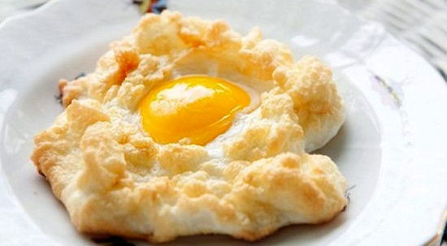

Telur Ceplok

Telur Ceplok
Bahan
Telur
Minyak
Garam
Cara Membuat
Panaskan wajan dan Kasih minyak secukupnya
Setelah panas ceplok telor di wajan
Taburkan garam secukupnya
bolak balik hingga matang
Angkat dan sajikan